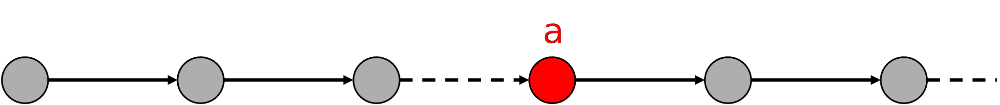
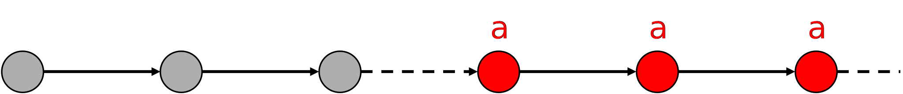
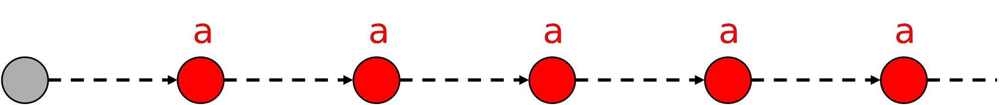

Développement de systèmes critiques
avec la méthode Event-B
La validation d'un modèle Event-B avec ProB
3A cursus ingénieurs - Mention Sciences du Logiciel
CentraleSupelec - Université Paris-Saclay - 2025/2026
CentraleSupelec - Université Paris-Saclay - 2025/2026

The proof with Atelier-B
-
There are two main proof activities in the Event-B method:
- the proof of consistency $\to$ the events of a machine preserve the invariant
- the proof of refinement $\to$ one machine is a valid refinement of another
-
In the Rodin platform, proof activities are supported by tools, such as
the Atelier-B plugin- the Rodin platform generates the list of proof obligations (PO)
- the Atelier-B plugin is an automatic prover
-
In some cases, the most complex POs are not proved automatically
and must be proved interactively.
History of formal verification methods
Before $\ldots$
- Software code was sequential
- Properties were expressed in First-Order Predicate Logic
- Theorem provers $\to$ partial/total correctness
- Hardly automated $\to$ semi-decidable (e.g. B or Event-B methods)
After 80's
- Software is concurrent and reactive
- Properties are expressed in Temporal Logic
- Solving accurate properties like safety, liveness, fairness $\ldots$
- Push-Button $\to$ decidable (e.g. Model Checking)
Principe du Model-Checking


Logiques temporelles
- Permettent d'exprimer des propriétés sur des séquences d'observations
- Utilisation de connecteurs temporels et de quantificateurs sur les chemins
- On pourrait utiliser la logique du premier ordre.
$\phi ~~~~ ::= ~~~~ true ~~~~ | ~~~~ a ~~~~ | ~~~~ \phi ~~~~ \wedge ~~~~ \phi ~~~~ | ~~~~ \neg~\phi ~~~~ | ~~~~ \exists x.~\phi~ ~~~~ | ~~~~ ...$- Exemple : "toute requête sera un jour satisfaite"
- $ \forall t . (\text{requete} \to \exists t' \geq t . (\text{reponse}))$
- difficile à écrire/comprendre
- vérification peu efficace
- Pas de variable pour gérer le temps (instants implicites)
- Temporel $\neq$ temporisé
la logiques temporelles ne quantifient pas écoulement du temps.
Propositional Linear Temporal logic (LTL)
$\phi ~~~~ ::= ~~~~ true ~~~~ | ~~~~ a ~~~~ | ~~~~ \phi ~~~~ \wedge ~~~~ \phi ~~~~ | ~~~~ \neg~\phi ~~~~ $
$| ~~~~ \bigcirc~\phi ~~~~ $
$| ~~~~ \square~\phi ~~~~ $
avec $a \in AP$
$~~~~~~~~~~~~~~~~~~~~~~~~ \bigcirc$ $\equiv$ $\text{X}$ (next)
$~~~~~ \square$ $\equiv$ $\text{G}$ (always)
$\sigma \models a ~~~~~$

$\sigma \models \bigcirc~a$

$\sigma \models \square~a$

Opérateurs temporels dérivés
$\square~\phi \equiv \text{G}~\phi$
(always)
(always)
$\Diamond ~ \phi \equiv \text{F}~\phi \equiv \neg \square \neg \phi$
(eventually)
(eventually)
$\Diamond \square ~\phi$
(persistence)
(persistence)
$\square \Diamond ~\phi \equiv \neg \Diamond \square \neg \phi$
(infinitely many)
(infinitely many)
$\sigma \models \square~a$
$\sigma \models \Diamond~a~~$

$\sigma \models \Diamond \square~a$

$\sigma \models \square \Diamond~a$

L'opérateur Until
$\phi ~~~ ::= ~~~ true ~~~ | ~~~ a ~~~ | ~~~ \phi ~~~ \wedge ~~~ \phi ~~~ | ~~~ \neg~\phi ~~~
| ~~~ \bigcirc~\phi ~~~ | ~~~ \square~\phi ~~~ $
$| ~~~ \phi ~~~ \bigcup ~~~ \phi$
$try \Rightarrow \bigcirc~deliv$

$try \Rightarrow \Diamond~deliv$

$~~~try~\bigcup~deliv$

$\Diamond~\phi~\equiv~true~\cup~\phi~~~~$ et $~~~~\square~\phi \equiv \neg \Diamond \neg \phi$
Exemple I

Prenant la trace $~~~~~ \sigma ~= ~$ Off On Err Err Err $~\ldots = ~$ Off On Err$^\omega$
- $\sigma ~\vDash$ Off $~~~~~~~~~~$ mais $\sigma ~\nvDash$ On $~~~~~~~~~~$ alors $\sigma ~\vDash~ \neg$On
- $\sigma ~\vDash~ \text{X}$ On
- $\sigma ~\vDash~ \text{X} \text{X}$ Err
- $\sigma ~\vDash~ $( Off $ \vee $ On )$~\text{U}$ Err
- $\sigma ~\vDash~ \text{G} ($ Err $ \Rightarrow \text{X} $ Err $)$
- $\sigma ~\vDash~ \text{G} ($ Err $ \Rightarrow \text{G} $ Err $)$
- $\sigma ~\vDash~ \text{F} \text{G} $ Err
- $\sigma ~\vDash~ \text{X} \text{X} ~\text{G} $ Err
Exemple II

Prenant la trace $~~~~~ \sigma ~= ~$ Off On Off On Off $~\ldots =~$ (Off On)$^\omega$
- $\sigma~$ $\nvDash$ $~($ Off $\vee $ On $ )~\text{U}~$Err
- $\sigma~$ $\vDash$ $~\text{F}$ Err $\Rightarrow (($ Off $\vee$ On $)~\text{U}~ $Err ) $~~~~~~$ car $~~\sigma ~\nvDash~ \text{F} $ Err
- $\sigma~$ $\vDash$ $~\text{G} ($ On $\vee$ Off $)$
- $\sigma~$ $\vDash$ $~\text{G} \text{F}$ On $\wedge ~ \text{G} \text{F}$ Off
- $\sigma~$ $\nvDash$ $~\text{F} \text{G}$ On $\vee ~\text{F} \text{G}$ Off
- $\sigma~$ $\vDash$ $~\text{G}$ (Off $\Rightarrow \text{X}$ On) $\wedge ~ \text{G}$ (On $\Rightarrow \text{X}$ Off)
Principe du Model-Checking

Systèmes de transition
- modèle pour décrire le comportement des systèmes
- digraphes où les nœuds représentent les états
et les arêtes représentent
les transitions -
états :
- la couleur actuelle d'un feu de circulation : rouge, vert, orange.
- software : les valeurs actuelles de toutes les variables du programme...
- hardware : la valeur actuelle des registres ainsi que les valeurs des bits d'entrée
-
transitions : ("changement d'états")
- un passage d'une couleur à une autre
- software : l'exécution d'une instruction de programme
- hardware : le changement des registres et des bits de sortie pour une nouvelle entrée
Modelling with Event-B
- An Event-B specification contains:
- a state (data, sets, relationships, ...)
- invariants, properties (first order predicates logic)
- transitions (intialisation and events) to update the state (substitutions)


The refinment of an Event-B model
- Refining a specification consists of enriching it and reformulating it with another more concrete specification.